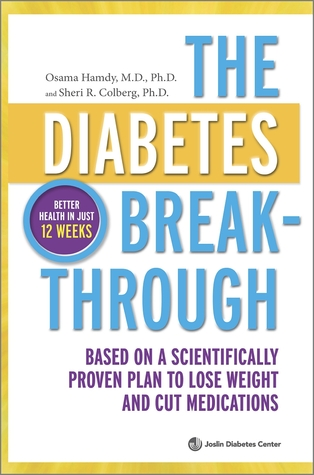
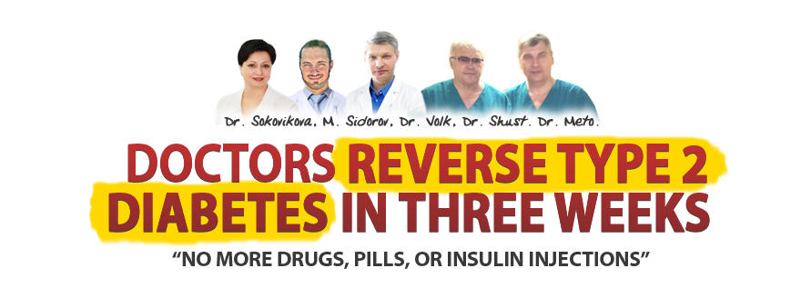
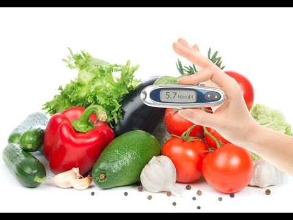

7 Steps To Health And Big Diabetes Lie Review - Reverse Type 2 Diabetes In JUST 3 Weeks Naturally
Big Diabetes Lie is a result from 100 years of research and contribution from several doctors whom wants to expose the truth to the public – the truth that most diseases can be stopped, reversed, or even cured without the need of drugs and surgeries.
Diabetes is a group of metabolic disease that involve high blood sugar levels within the body over a prolonged period. It is due to the pancreas not being able to produce enough insulin for the body or the cells of the body failing to respond to the insulin being produced. If diabetes is left untreated it can cause many complications and some of the serious complications include stroke, foot ulcers, damage to the eyes and chronic kidney failure. If you struggle with diabetes, you might be wondering whether or not this disease will plague you forever or if there is a cure. Thankfully, the program Big Diabetes Lie reveals the secret for curing your diabetes once and for all.
This amazing ebook offers a lot of valuable information about how the Big Pharmaceutical companies have been misleading patients, leading them to believe that they need diabetes medicine for the rest of their lives. What you might not know is that it is possible to cure your diabetes with a change in diet, so that you don’t have to suffer from this disease any more. The book tackles a lot of very valuable information about the contributing factors to diabetes, including inflammation and the natural pH of the body. This program has helped a lot of people with diabetes and it’s a very valuable resource for taking charge of your own health.
Already Decided?
That's great! Click the button on your right and take the action now.
What is 7 Steps to Health and the Big Diabetes Lie?
7 Steps to Health and the Big Diabetes Lie is a downloadable eBook sold at TheICTM.org. That oddly-named website refers to “The International Council for Truth in Medicine”, which appears to be an online nutrition blog masquerading as an official medical organization.
This International Council of doctors claims to have reversed type 2 diabetes. If you follow their simple steps, then you can reverse your type 2 diabetes too.
Some of the other claims made by the ICTM include:
Doctors at ICTM have “helped 17,542 type 2 diabetics end the need for prescription drugs, insulin injections and blood sugar monitoring.”
The strategies you’ll read about in this online eBook are “twice as effective as the leading type 2 drug” when it comes to normalizing blood sugar levels, preventing blindness, and reducing neuropathy pain, among other symptoms of type 2 diabetes.
Tens of thousands of people “in over 40 countries” have successfully used these strategies to cure their type 2 diabetes.
Basically, you download the eBook, follow the guides and lessons inside the book, then watch your diabetes disappear in 21 days.
Does that sound too good to be true? Probably. Keep reading to discover how the Big Diabetes Lie works

How Does The Big Diabetes Lie Work?
The Big Diabetes Lie will provide you in-depth detailed information on how to reverse your type 2 diabetes thoroughly. This program will identify the healthy foods that can also exacerbate the conditions of your diabetes. This program will allow you to achieve the right balance in your diet. This program will help you to easily understand the right ways of the nutrition has a far greater impact on what the pharmaceutical industry call diabetes. Inside this program, you will be educated that you by the effects of sugar, meat, also refined white flour, fat and you will easily understand the harmful stresses that are sometimes put on your body. This program will eliminate your intake of these harmful toxins which will help you body the good chance to heal itself and also reverse your type 1 diabetes.
This program will provide you all the necessary foods to improve your healthy system. By using this program, you will easily grab the special attention to the low-fat food and also get advises readers to lessen the fast food and white foods such as gluten which includes grains and white pasta. This program will improve your complete strength and overall body immune system. Everything has been done well without the help of insulin and other treatment. It is the good opportunity for banishing your diabetics to learn the real things about their ailment and to know the best effective way to deal with the diabetic situation without having to use any prescription drug or insulin injections.
This program will provide you the techniques to get the natural proven cures for your diabetes diseases and also use the supplements to improve your healing process. This program will work on the root cause of your diabetes disease and also the fixed from the inside as well as out. In this method, it includes the healthy food works exactly twice better than men forming the leading diabetes drug at eradicating the rate of your diabetes. This program will regulate your full hormone system and also stimulate your pancreas is to work and function regularly. This program will open your eyes and also restore your confidence levels to reduce your type 2 diabetes.
About the Author
Big Diabetes Lie is not written by one person, it is written by a team of doctors that is known as the International Council for Truth in Medicine. This team is led by Max Sidorov, who is an author, nutritionist, entrepreneur and fitness trainer.
Max Sidorov has been in the health industry for more than a decade and he has travelled all over the world, learning from health professionals including nurses, doctors and scientists. He is deeply passionate about this program and has invested over 5 years of research into developing it.
Pros:
The Big Diabetes Lie will provide you all the information which is loaded into the easily understandable as simple to implement in daily life.
Inside this program, you will get the healthy recipes which are really hygienic for your health.
This program gives you all the tips and tricks on how to fight against your diabetes through proper diet, meal plans, and also exercise routines.
It will help you to balance your blood sugar levels and also be the preferred fuel source for your whole body.
Here, you will also the practical tool to support and also motivation which you have to cure your diabetes.
This program is all the proven natural method that does not include any drug or surgery.
Inside this program, you will get the healthy diet plan and the list of the healthy food to follow in daily routine.
You will learn on how to improve your thyroid function by adding the essential minerals into your diet.
- Within three weeks, you will be easily reverse your diabetes.
Cons:
Expecting The Big Diabetes Lie by Max Sidorov to reverse your diabetic condition overnight is totally unreasonable, as this program is Not the magical solution for your Type 2 diabetes. Before you purchase it, you have to ask yourself if you really have the discipline, determination, and also the ability to precisely follow Max SIdorov’s instructions and also recommendations to make the program actually works for you.
The Big Diabetes Lie comes in a digital format that can be either easily downloaded or visualized online, which can be a high let-down for patients with the slower Internet connections, or for lovers of the traditional printed books.
What Are You Waiting For?
Your Purchase is Backed Up by 30 Days Money Back Guarantee. If You Don't Like The Product, Give It Back And You Will Be Refunded With No Questions Asked!
Conclusion:
I really believe that The Big Diabetes Lie is the highly-recommended eBook that all type 2 diabetic can easily get benefit from it. Inside this program, you will be permanently reverse and also free of the type 2 diabetes without any drugs or medication. When you have type 2 diabetes, almost everything in your life that completely affected. Not only your health but also your physical appearance and social life. Then, you may feel so frustrated and worried every time because of your disease and its complications. The best part of this program, is that help you to bring back your freedom and also happiness in your life because there you never have to worry about any tough medication or deprive yourself of any food whenever you follow this program.
Inside this program, you will get 100% refund guarantee from and also limited period offer. So grab this nice opportunity to get cure the natural effective to reverse your type 2 diabetes for good, then The Big Diabetes Lie will be the best option for you. I truly Hope that you got all of the facts you required to make an informed decision. So that you have a healthy and happy life forever!
Recent Post
Mi40x Review - Xtreme Increases Lean Body Mass - Cell Expansion Protocol
 Exercise & Fitness/
Exercise & Fitness/
Joint Regen Review - The Most Complete Joint Formula Available
 Exercise & Fitness/
Exercise & Fitness/
Flat Belly Detox Review - Melt Stubborn Fat
 Diabetes Cure/
Diabetes Cure/
Defeating Diabetes Kit Review
 Dating Guides/How To Make Women Want You